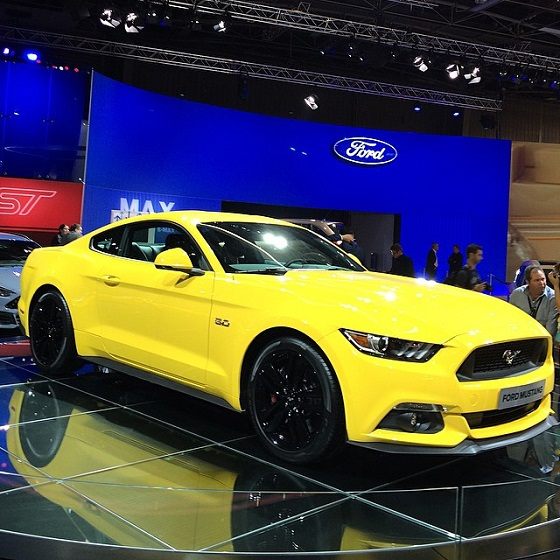
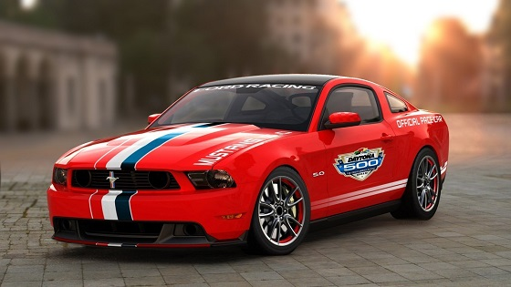

Шосте покоління 2014 — теперішній час
Ford Mustang GT
В грудні 2013 року представлено Mustang шостого покоління.
Автомобіль отримав з бензинові двигуни, перший — це 3.7 V6
(304 к.с., 366 Нм), від попереднього покоління, другий — двигун
5.0 V8 (426 к.с., 529 Нм), також від попередника і новий двигун
2.3 EcoBoost (309 к.с., 407 Нм) від нового Ford Focus RS.
П'яте покоління 2005 — теперішній час.

Shelby Mustang
Shelby Mustang — высокотехнологичный вариант Ford Mustang, производимый
Ford-ом с 1965 по 1970 год. Shelby были серией Ford Mustang модифицированные
компанией Carroll Shelby и продаваемых под маркой Shelby GT с логотипами
Shelby Cobra. С 1968 года модель стала называться Shelby 500 или Shelby
350 соответственно. Ford помогал своими производственными мощностями,
для конкуренции с Corvette (таким же образом поддерживаемой Chevrolet).
В 2007 году, вслед за представленным пятым поколением Ford Mustang, имя
Shelby было возвращено для новых высокопроизводительных версий Mustang.
Представлен в двух вариантах — GT500 и GT350. GT350 выпускается как с
компрессорным мотором, так и с атмосферным. Масса Shelby GT500 модели
2011 года составляют примерно 1735 кг.

- Общие данные
- Производитель: Shelby Automotive
- Годы пр-ва: 1964—1970,
2006—настоящее время
- Класс: Muscle car
- Дизайн
- Компоновка: переднемоторная, заднеприводная
- Колёсная формула: 4×2
- Двигатели
- V8, бензиновый инжектор с турбонаддувом и
промежуточным охлаждением (5800 см³, 662 л. с.),
расположен спереди, продольно
- Трансмиссия
- Характеристики
Массово-габаритные
- Длина: 4780 мм
- Ширина: 1877мм
- Высота: 1384мм
- Масса: 1777 кг
- Динамические
- Разгон до 100 км/ч: 0-100км/ за 3.6 с
- Макс. скорость: 330км/ч
- Другое
- Расход топлива: Городской цикл - 18,2. загородный цикл - 14,4 (л/100 км)
Форд Мустанг 5 GT (2005–2010)
Форд Мустанг 5 GT кабріолет (з 2010-)
На Північноамериканському міжнародному автосалоні в 2004 році
Форд представив повністю перепроектуваний Мустанг, під кодовою
назвою «S-197», який був заснований на повністю новій платформі
D2C. Розроблений під керівництвом Головного інженера Hau Thai-Tang
і дизайнера Sid Ramnarace, зовні Мустанг п'ятого покоління повторює
Мустанги «фастбек» кінця 1960-их. Старший віце-президент проекту Форда,
J Mays, назвав цей стиль «ретро футуризм»
Базова модель оснащується фордівськім двигуном V6 об'ємом 4.0 формату
літра з системою газорозподілу SOHC, який прийшов на заміну 3.8 літрової
версії використовувалася починаючи з 2004 року. Новий двигун видає
потужність 210 кінських сил при 5300 оборотах на хвилину і крутний
момент 325 Ньютон-метрів при 3500 оборотах на хвилину. Цей двигун йде
в комплекті зі стандартною п'ятиступінчастою механічною коробкою передач
«Tremec T-5». Опціонально встановлюється автоматична п'ятиступінчаста
коробка «5R55S». GT версію Мустанга виділяє 4.6 L SOHC Модульний V8 з
3 клапанами зі змінним упорскуванням, керовані за допомогою VCT, і
видає 300 к.с. (224 кВт). У версії 2005 приблизне відношення ваги до
потужності становить 11.5 фунтів на кінську силу. Хоча Мустанг GT
комплектується тією ж автоматичною коробкою передач, що і модель V6,
опціонально можна встановити 5 ступінчасту механічну КП Tremec 3650,
за допомогою якої можна використовувати додаткову потужність моделі
GT раціональніше.

Фото оновленої моделі 2010 року, виробництво якої почалося в квітні
2009 року, були представлені в Інтернеті ще до показу автомобіля на
автосалоні в Лос-Анжелесі.
Оновлений Мустанг отримав нове кузовне залізо (за винятком даху) і
агресивніший дизайн. Він виглядає компактніше в порівнянні з попередниками,
але фактичні габарити залишилися незмінні. Автомобіль виконаний
відповідно до проекту Peter'a Horbury — директора північно-американського
підрозділу Форд.